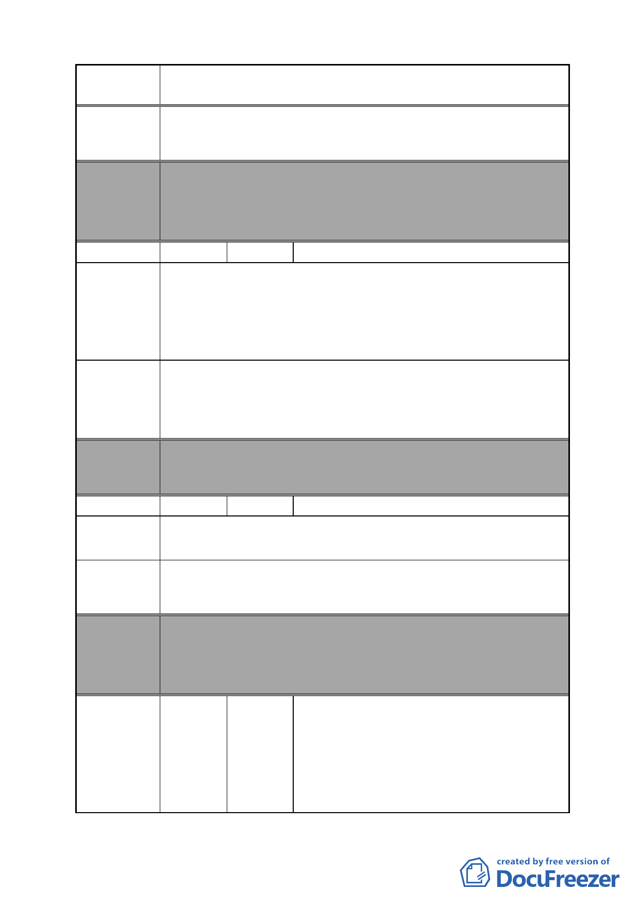

案 名 變更臺北市南港區鐵路地下化沿線土地主要計畫案
建議辦法 為維持街廓的完整性與各地號的整齊，建議市府應審慎評估
15 各區的狀況，以免造成不公。
委員會
決議
編號
陳情理由
建議辦法
委員會
決議
本案除文字誤繕應再作修正外，其餘依市府本次會議所送修
正計畫書內容通過。
（市府本次會議所送修正計畫書，業將陳情地點剔除於市地
重劃範圍）
37 陳情人 王新勝
1.市地重劃施行費用與開發費用是否包含在捐地的 45％。
2.捐第 45％是否可以提高容積獎勵。
3.捐出 45％土地作為流行音樂中心用地，是否可以建立捐贈
者紀念碑。
4.有時效性的快速變更。
1.公聽會說明給予相關地主瞭解。
2.是否可以修法以商業區第三種 560％為容積獎勵實施。
3.設計流行音樂中心時是否可併入討論。
4.區域完整的區塊是否可以先行施行以利時效性的掌握。
本案除文字誤繕應再作修正外，其餘依市府本次會議所送修
正計畫書內容通過。
編號
38 陳情人 郭榮墻
陳情地點：昆陽街 60 巷 6 號 6-1 號、8 號、8-1 號。
陳情理由
維持原狀。
建議辦法
委員會
決議
編號
本案除文字誤繕應再作修正外，其餘依市府本次會議所送修
正計畫書內容通過。
（依市府本次會議所送修正計畫書，業將陳情地點剔除於市
地重劃範圍）
謝梁有、楊秋基、張進順、鄭洽弘、鄭子
川、台北市麵粉製品業職業工會、台北市
39
陳情人
醬類業職業工會、洪進誠、宋宇克全、詹
炳煌、葉立祥、李闕愛玉、詹昌憲、詹洸
城、李黃糖、林勤、陳春美、李康淑珠、
鄭紅英、尤改浮、張惠美、鄭朝吉、鄭麗
- 45 -